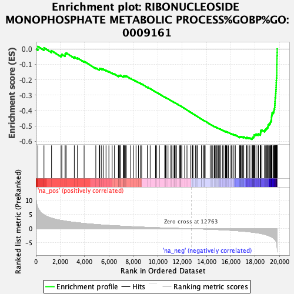
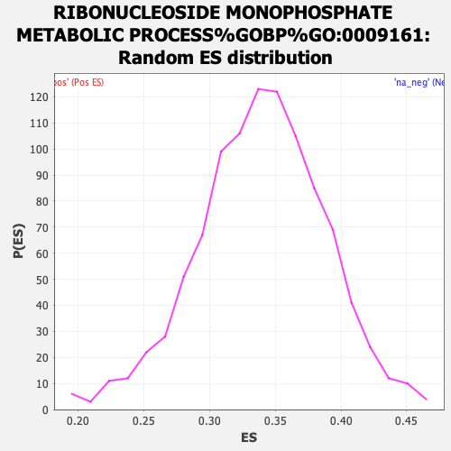

| | | Dataset | expr_RNAseq_ranks |
| Phenotype | NoPhenotypeAvailable |
| Upregulated in class | na_neg |
| GeneSet | RIBONUCLEOSIDE MONOPHOSPHATE METABOLIC PROCESS%GOBP%GO:0009161 |
| Enrichment Score (ES) | -0.58819425 |
| Normalized Enrichment Score (NES) | NaN |
| Nominal p-value | NaN |
| FDR q-value | 1.0 |
| FWER p-Value | 0.0 |
Table: GSEA Results Summary

Fig 1: Enrichment plot: RIBONUCLEOSIDE MONOPHOSPHATE METABOLIC PROCESS%GOBP%GO:0009161
Profile of the Running ES Score & Positions of GeneSet Members on the Rank Ordered List
| PROBE | GENE SYMBOL | GENE_TITLE | RANK IN GENE LIST | RANK METRIC SCORE | RUNNING ES | CORE ENRICHMENT | | 1 | COX4I2 | | | 165 | 7.403 | 0.0164 | No |
| 2 | HK3 | | | 664 | 4.931 | 0.0076 | No |
| 3 | PFKFB1 | | | 1287 | 3.737 | -0.0116 | No |
| 4 | ADPGK | | | 2069 | 2.934 | -0.0416 | No |
| 5 | MYH3 | | | 2135 | 2.895 | -0.0352 | No |
| 6 | FOXK1 | | | 2395 | 2.703 | -0.0393 | No |
| 7 | ENTPD5 | | | 2408 | 2.693 | -0.0309 | No |
| 8 | NMNAT1 | | | 2482 | 2.646 | -0.0258 | No |
| 9 | ATP1A2 | | | 3156 | 2.248 | -0.0525 | No |
| 10 | IMPDH2 | | | 3413 | 2.121 | -0.0584 | No |
| 11 | TGFB1 | | | 3961 | 1.866 | -0.0800 | No |
| 12 | PFKL | | | 4921 | 1.499 | -0.1239 | No |
| 13 | NT5C2 | | | 5203 | 1.403 | -0.1335 | No |
| 14 | NDUFS2 | | | 5212 | 1.399 | -0.1292 | No |
| 15 | SDHA | | | 5248 | 1.385 | -0.1263 | No |
| 16 | UQCRC1 | | | 5397 | 1.343 | -0.1294 | No |
| 17 | SDHC | | | 5537 | 1.305 | -0.1321 | No |
| 18 | TPI1 | | | 5759 | 1.237 | -0.1392 | No |
| 19 | HSPA8 | | | 5996 | 1.166 | -0.1473 | No |
| 20 | ATP5A1 | | | 6262 | 1.095 | -0.1571 | No |
| 21 | NT5E | | | 6452 | 1.044 | -0.1633 | No |
| 22 | ENO3 | | | 6774 | 0.969 | -0.1764 | No |
| 23 | ENPP1 | | | 6798 | 0.965 | -0.1743 | No |
| 24 | AMPD3 | | | 6865 | 0.952 | -0.1745 | No |
| 25 | AMPD2 | | | 6905 | 0.943 | -0.1733 | No |
| 26 | NDUFV1 | | | 6925 | 0.937 | -0.1711 | No |
| 27 | PKM | | | 7168 | 0.883 | -0.1805 | No |
| 28 | PGM1 | | | 7184 | 0.879 | -0.1783 | No |
| 29 | NUDT11 | | | 7195 | 0.876 | -0.1759 | No |
| 30 | PGM2L1 | | | 7275 | 0.858 | -0.1771 | No |
| 31 | GMPR2 | | | 7299 | 0.854 | -0.1754 | No |
| 32 | PFKM | | | 7373 | 0.837 | -0.1763 | No |
| 33 | ADSL | | | 7421 | 0.827 | -0.1759 | No |
| 34 | GAPDH | | | 7784 | 0.748 | -0.1918 | No |
| 35 | VPS9D1 | | | 8012 | 0.697 | -0.2011 | No |
| 36 | GPI | | | 8223 | 0.654 | -0.2096 | No |
| 37 | ENO2 | | | 8426 | 0.611 | -0.2178 | No |
| 38 | ALDOC | | | 8569 | 0.584 | -0.2231 | No |
| 39 | CTNS | | | 8686 | 0.565 | -0.2271 | No |
| 40 | ATP5B | | | 9173 | 0.477 | -0.2503 | No |
| 41 | ADSSL1 | | | 9193 | 0.474 | -0.2496 | No |
| 42 | AK5 | | | 9382 | 0.439 | -0.2578 | No |
| 43 | PGK1 | | | 9821 | 0.375 | -0.2788 | No |
| 44 | PARP1 | | | 9922 | 0.359 | -0.2827 | No |
| 45 | TAZ | | | 10144 | 0.322 | -0.2929 | No |
| 46 | NDUFB5 | | | 10583 | 0.263 | -0.3143 | No |
| 47 | PAICS | | | 10608 | 0.260 | -0.3147 | No |
| 48 | ENO1 | | | 10642 | 0.255 | -0.3155 | No |
| 49 | PGAM1 | | | 10700 | 0.248 | -0.3176 | No |
| 50 | LACE1 | | | 10849 | 0.227 | -0.3243 | No |
| 51 | GART | | | 11091 | 0.194 | -0.3360 | No |
| 52 | LHPP | | | 11107 | 0.192 | -0.3361 | No |
| 53 | ALDOA | | | 11260 | 0.173 | -0.3432 | No |
| 54 | GMPS | | | 11370 | 0.163 | -0.3482 | No |
| 55 | SDHD | | | 11407 | 0.157 | -0.3496 | No |
| 56 | PFKP | | | 11440 | 0.153 | -0.3507 | No |
| 57 | HK1 | | | 11549 | 0.135 | -0.3557 | No |
| 58 | STOML2 | | | 11789 | 0.104 | -0.3675 | No |
| 59 | ENPP3 | | | 11840 | 0.099 | -0.3698 | No |
| 60 | NDUFS7 | | | 11888 | 0.094 | -0.3718 | No |
| 61 | HPRT1 | | | 11918 | 0.089 | -0.3730 | No |
| 62 | NDUFA7 | | | 11987 | 0.077 | -0.3762 | No |
| 63 | FIGNL1 | | | 12215 | 0.054 | -0.3876 | No |
| 64 | PPAT | | | 12406 | 0.034 | -0.3972 | No |
| 65 | IMPDH1 | | | 12703 | 0.006 | -0.4122 | No |
| 66 | UMPS | | | 12830 | -0.008 | -0.4186 | No |
| 67 | NDUFA10 | | | 12870 | -0.012 | -0.4206 | No |
| 68 | MT-ND5 | | | 12900 | -0.016 | -0.4220 | No |
| 69 | NDUFS1 | | | 13098 | -0.038 | -0.4319 | No |
| 70 | PRTFDC1 | | | 13220 | -0.051 | -0.4379 | No |
| 71 | NDUFA13 | | | 13271 | -0.056 | -0.4403 | No |
| 72 | UQCRFS1 | | | 13606 | -0.095 | -0.4569 | No |
| 73 | CLPX | | | 13607 | -0.095 | -0.4566 | No |
| 74 | NDUFV2 | | | 13772 | -0.117 | -0.4646 | No |
| 75 | COX15 | | | 13849 | -0.129 | -0.4680 | No |
| 76 | SLC25A13 | | | 13866 | -0.132 | -0.4684 | No |
| 77 | MT-CO3 | | | 13897 | -0.136 | -0.4695 | No |
| 78 | NDUFA9 | | | 14309 | -0.197 | -0.4897 | No |
| 79 | NUDT10 | | | 14426 | -0.216 | -0.4949 | No |
| 80 | PFAS | | | 14523 | -0.231 | -0.4990 | No |
| 81 | APRT | | | 14646 | -0.256 | -0.5044 | No |
| 82 | AK3 | | | 14698 | -0.264 | -0.5061 | No |
| 83 | MT-ND4L | | | 14767 | -0.280 | -0.5086 | No |
| 84 | HK2 | | | 14860 | -0.297 | -0.5123 | No |
| 85 | PGAM4 | | | 14873 | -0.299 | -0.5119 | No |
| 86 | NADK | | | 14980 | -0.317 | -0.5163 | No |
| 87 | FOXK2 | | | 15072 | -0.336 | -0.5198 | No |
| 88 | NDUFB8 | | | 15125 | -0.345 | -0.5213 | No |
| 89 | COX6C | | | 15137 | -0.347 | -0.5207 | No |
| 90 | NDUFA11 | | | 15316 | -0.384 | -0.5285 | No |
| 91 | NDUFS3 | | | 15384 | -0.399 | -0.5305 | No |
| 92 | TEFM | | | 15539 | -0.438 | -0.5369 | No |
| 93 | AK9 | | | 15566 | -0.446 | -0.5367 | No |
| 94 | NDUFS8 | | | 15615 | -0.457 | -0.5377 | No |
| 95 | COX7A2L | | | 15664 | -0.467 | -0.5385 | No |
| 96 | PRKAG2 | | | 15758 | -0.486 | -0.5416 | No |
| 97 | ATP1B1 | | | 15814 | -0.503 | -0.5428 | No |
| 98 | COX10 | | | 16017 | -0.557 | -0.5512 | No |
| 99 | GCK | | | 16060 | -0.569 | -0.5514 | No |
| 100 | ATIC | | | 16184 | -0.603 | -0.5557 | No |
| 101 | PARG | | | 16202 | -0.608 | -0.5545 | No |
| 102 | BAD | | | 16360 | -0.655 | -0.5603 | No |
| 103 | UQCRC2 | | | 16364 | -0.656 | -0.5583 | No |
| 104 | NDUFC2 | | | 16718 | -0.766 | -0.5737 | No |
| 105 | LDHA | | | 16751 | -0.780 | -0.5727 | No |
| 106 | MT-CO1 | | | 16755 | -0.781 | -0.5702 | No |
| 107 | AK4 | | | 16823 | -0.803 | -0.5709 | No |
| 108 | ADSS | | | 16856 | -0.816 | -0.5698 | No |
| 109 | MT-ND1 | | | 16975 | -0.857 | -0.5730 | No |
| 110 | COX6A1 | | | 17063 | -0.886 | -0.5744 | No |
| 111 | UQCR11 | | | 17068 | -0.886 | -0.5717 | No |
| 112 | NUDT3 | | | 17267 | -0.975 | -0.5785 | No |
| 113 | COX4I1 | | | 17325 | -0.996 | -0.5781 | No |
| 114 | ATP5S | | | 17332 | -0.998 | -0.5750 | No |
| 115 | NDUFS6 | | | 17492 | -1.073 | -0.5795 | No |
| 116 | MT-ATP8 | | | 17570 | -1.109 | -0.5797 | No |
| 117 | GBAS | | | 17737 | -1.199 | -0.5842 | Yes |
| 118 | SDHAF2 | | | 17759 | -1.209 | -0.5812 | Yes |
| 119 | NDUFB9 | | | 17766 | -1.213 | -0.5774 | Yes |
| 120 | MT-CYB | | | 17806 | -1.235 | -0.5753 | Yes |
| 121 | NDUFA5 | | | 17851 | -1.264 | -0.5733 | Yes |
| 122 | CYC1 | | | 17904 | -1.294 | -0.5716 | Yes |
| 123 | MT-ND4 | | | 17907 | -1.296 | -0.5674 | Yes |
| 124 | MT-CO2 | | | 17908 | -1.297 | -0.5630 | Yes |
| 125 | NDUFB11 | | | 17910 | -1.298 | -0.5587 | Yes |
| 126 | OLA1 | | | 17988 | -1.344 | -0.5581 | Yes |
| 127 | NDUFB7 | | | 18074 | -1.394 | -0.5578 | Yes |
| 128 | MT-ND6 | | | 18078 | -1.397 | -0.5533 | Yes |
| 129 | MT-ND3 | | | 18243 | -1.507 | -0.5566 | Yes |
| 130 | COX5A | | | 18271 | -1.524 | -0.5528 | Yes |
| 131 | NUDT4 | | | 18429 | -1.648 | -0.5553 | Yes |
| 132 | ATP5F1 | | | 18438 | -1.661 | -0.5502 | Yes |
| 133 | NUDT5 | | | 18444 | -1.669 | -0.5448 | Yes |
| 134 | MT-ATP6 | | | 18454 | -1.678 | -0.5397 | Yes |
| 135 | MT-ND2 | | | 18460 | -1.683 | -0.5343 | Yes |
| 136 | ATP5G3 | | | 18473 | -1.702 | -0.5292 | Yes |
| 137 | SURF1 | | | 18558 | -1.773 | -0.5275 | Yes |
| 138 | BPGM | | | 18781 | -1.997 | -0.5321 | Yes |
| 139 | RFK | | | 18807 | -2.028 | -0.5266 | Yes |
| 140 | ATP5G2 | | | 18867 | -2.091 | -0.5226 | Yes |
| 141 | CHCHD10 | | | 18919 | -2.165 | -0.5180 | Yes |
| 142 | COA6 | | | 18968 | -2.227 | -0.5129 | Yes |
| 143 | ATP5D | | | 19029 | -2.316 | -0.5082 | Yes |
| 144 | CYCS | | | 19056 | -2.357 | -0.5017 | Yes |
| 145 | NDUFAF1 | | | 19059 | -2.364 | -0.4938 | Yes |
| 146 | NDUFV3 | | | 19124 | -2.448 | -0.4889 | Yes |
| 147 | NDUFB10 | | | 19198 | -2.605 | -0.4839 | Yes |
| 148 | NDUFB2 | | | 19246 | -2.686 | -0.4773 | Yes |
| 149 | COX5B | | | 19275 | -2.755 | -0.4695 | Yes |
| 150 | NDUFB6 | | | 19322 | -2.835 | -0.4623 | Yes |
| 151 | NDUFA8 | | | 19346 | -2.876 | -0.4539 | Yes |
| 152 | NDUFA2 | | | 19348 | -2.876 | -0.4443 | Yes |
| 153 | NDUFC1 | | | 19354 | -2.891 | -0.4348 | Yes |
| 154 | ATP5L | | | 19384 | -2.966 | -0.4264 | Yes |
| 155 | ATP5G1 | | | 19387 | -2.982 | -0.4165 | Yes |
| 156 | UQCRH | | | 19479 | -3.242 | -0.4103 | Yes |
| 157 | NDUFAB1 | | | 19541 | -3.471 | -0.4018 | Yes |
| 158 | ATP5C1 | | | 19562 | -3.529 | -0.3909 | Yes |
| 159 | NDUFB1 | | | 19603 | -3.719 | -0.3805 | Yes |
| 160 | NDUFA3 | | | 19611 | -3.750 | -0.3683 | Yes |
| 161 | ATP5O | | | 19619 | -3.810 | -0.3559 | Yes |
| 162 | NDUFS5 | | | 19629 | -3.881 | -0.3434 | Yes |
| 163 | ATP5E | | | 19638 | -3.942 | -0.3306 | Yes |
| 164 | ADK | | | 19639 | -3.950 | -0.3173 | Yes |
| 165 | ATP5J2 | | | 19679 | -4.150 | -0.3054 | Yes |
| 166 | ATP5I | | | 19685 | -4.207 | -0.2916 | Yes |
| 167 | ATP5H | | | 19699 | -4.295 | -0.2778 | Yes |
| 168 | NDUFA6 | | | 19705 | -4.348 | -0.2635 | Yes |
| 169 | NDUFA12 | | | 19723 | -4.443 | -0.2495 | Yes |
| 170 | NDUFA4 | | | 19728 | -4.485 | -0.2347 | Yes |
| 171 | COX8A | | | 19734 | -4.515 | -0.2198 | Yes |
| 172 | UQCR10 | | | 19739 | -4.628 | -0.2045 | Yes |
| 173 | NDUFB4 | | | 19750 | -4.777 | -0.1890 | Yes |
| 174 | ATP5J | | | 19773 | -5.157 | -0.1729 | Yes |
| 175 | NDUFA1 | | | 19777 | -5.322 | -0.1552 | Yes |
| 176 | COX6B1 | | | 19778 | -5.340 | -0.1373 | Yes |
| 177 | NDUFS4 | | | 19779 | -5.367 | -0.1193 | Yes |
| 178 | COX7C | | | 19780 | -5.372 | -0.1013 | Yes |
| 179 | PFKFB2 | | | 19791 | -5.652 | -0.0829 | Yes |
| 180 | UQCRB | | | 19792 | -5.652 | -0.0639 | Yes |
| 181 | UQCRQ | | | 19795 | -5.813 | -0.0446 | Yes |
| 182 | NDUFB3 | | | 19806 | -6.693 | -0.0227 | Yes |
| 183 | COX7B | | | 19810 | -6.867 | 0.0002 | Yes |
Table: GSEA details [plain text format]

Fig 2: RIBONUCLEOSIDE MONOPHOSPHATE METABOLIC PROCESS%GOBP%GO:0009161: Random ES distribution
Gene set null distribution of ES for RIBONUCLEOSIDE MONOPHOSPHATE METABOLIC PROCESS%GOBP%GO:0009161